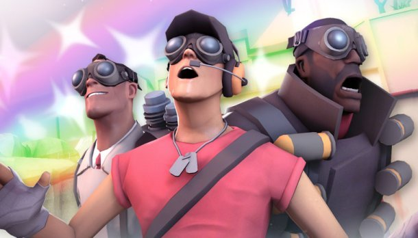
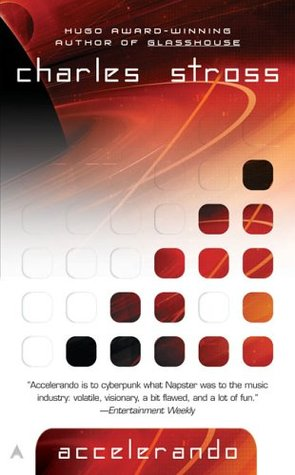
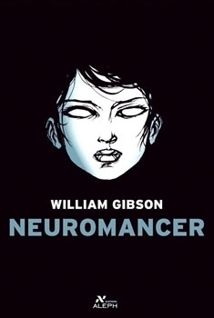

<a-scene>
	<a-assets>
		
		
		
	</a-assets>

	<a-plane material="src: #img1;" width="6" height="4.5" position="0 0 -3">
		<a-animation attribute="rotation"
					dur="3000"
					direction="normal"
					to="0 360 0"
					repeat="indefinite"></a-animation>
	</a-plane>

	<a-plane material="src: #img2;" width="4" height="7" position="-5 0 -3" rotation="0 60 0">
		<a-animation attribute="rotation"
					dur="2000"
					direction="normal"
					to="0 420 0"
					repeat="indefinite"></a-animation>
	</a-plane>

	<a-plane material="src: #img3;" width="4" height="7" position="5 0 -3" rotation="0 -60 0">
		<a-animation attribute="rotation"
					dur="5000"
					direction="normal"
					to="0 300 0"
					repeat="indefinite"></a-animation>
	</a-plane>


	<a-sky color="plum"></a-sky>

</a-scene>
